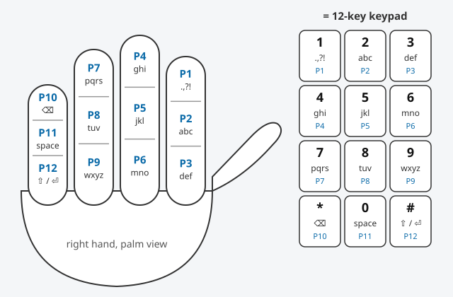

Camera-based prototype of the sEMG wristband keyboard. Hold your hand open, palm toward the camera, then touch your thumb to a finger segment. Each of the 12 segments (P1–P12) is one key.

Cardboard uses the rear camera as passthrough. Put the phone in landscape in the viewer; tap the screen to open settings.
Debug: keys 1–9, * (or Q), 0, # (or W) act as P1–P12. Hold * or # for the long-press action.